Member Search

|
Introduction
Are you familiar with the following situation? You open the Div I Medium and don't know how to approach it, while a lot of people in your room submitted it in less than 10 minutes. Then, after the contest, you find out in the editorial that this problem can be simply reduced to a classical one. If yes, then this tutorial will surely be useful for you.
Problem statement
In this article we'll deal with one optimization problem, which can be informally defined as:
Assume that we have N workers and N jobs that should be done. For each pair (worker, job) we know salary that should be paid to worker for him to perform the job. Our goal is to complete all jobs minimizing total inputs, while assigning each worker to exactly one job and vice versa.
Converting this problem to a formal mathematical definition we can form the following equations:
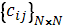 - cost matrix, where cij - cost of worker i to perform job j.
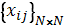 - resulting binary matrix, where xij = 1 if and only if ith worker is assigned to jth job.
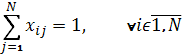 - one worker to one job assignment.
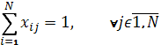 - one job to one worker assignment.
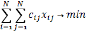 - total cost function.
We can also rephrase this problem in terms of graph theory. Let's look at the job and workers as if they were a bipartite graph, where each edge between the ith worker and jth job has weight of cij. Then our task is to find minimum-weight matching in the graph (the matching will consists of N edges, because our bipartite graph is complete).
Small example just to make things clearer:
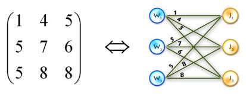
General description of the algorithm
This problem is known as the assignment problem. The assignment problem is a special case of the transportation problem, which in turn is a special case of the min-cost flow problem, so it can be solved using algorithms that solve the more general cases. Also, our problem is a special case of binary integer linear programming problem (which is NP-hard). But, due to the specifics of the problem, there are more efficient algorithms to solve it. We'll handle the assignment problem with the Hungarian algorithm (or Kuhn-Munkres algorithm). I'll illustrate two different implementations of this algorithm, both graph theoretic, one easy and fast to implement with O(n4) complexity, and the other one with O(n3) complexity, but harder to implement.
There are also implementations of Hungarian algorithm that do not use graph theory. Rather, they just operate with cost matrix, making different transformation of it (see [1] for clear explanation). We'll not touch these approaches, because it's less practical for TopCoder needs.
O(n4) algorithm explanation
As mentioned above, we are dealing with a bipartite graph. The main idea of the method is the following: consider we've found the perfect matching using only edges of weight 0 (hereinafter called "0-weight edges"). Obviously, these edges will be the solution of the assignment problem. If we can't find perfect matching on the current step, then the Hungarian algorithm changes weights of the available edges in such a way that the new 0-weight edges appear and these changes do not influence the optimal solution.
To clarify, let's look at the step-by-step overview:
Step 0)
A. For each vertex from left part (workers) find the minimal outgoing edge and subtract its weight from all weights connected with this vertex. This will introduce 0-weight edges (at least one).
B. Apply the same procedure for the vertices in the right part (jobs).
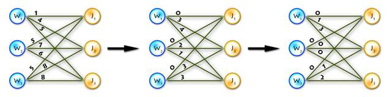
Actually, this step is not necessary, but it decreases the number of main cycle iterations.
Step 1)
A. Find the maximum matching using only 0-weight edges (for this purpose you can use max-flow algorithm, augmenting path algorithm, etc.).
B. If it is perfect, then the problem is solved. Otherwise find the minimum vertex cover V (for the subgraph with 0-weight edges only), the best way to do this is to use Köning's graph theorem.
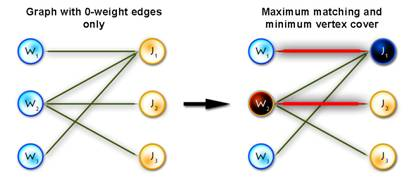
Step 2) Let and adjust the weights using the following rule:
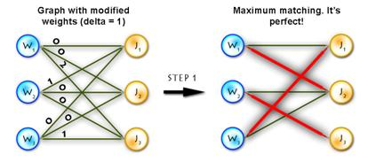
Step 3) Repeat Step 1 until solved.
But there is a nuance here; finding the maximum matching in step 1 on each iteration will cause the algorithm to become O(n5). In order to avoid this, on each step we can just modify the matching from the previous step, which only takes O(n2) operations.
It's easy to see that no more than n2 iterations will occur, because every time at least one edge becomes 0-weight. Therefore, the overall complexity is O(n4).
O(n3) algorithm explanation
Warning! In this section we will deal with the maximum-weighted
matching problem. It's obviously easy to transform minimum problem to
the maximum one, just by setting:
or
.
Before discussing the algorithm, let's take a look at some of the theoretical ideas. Let's start off by considering we have a complete bipartite graph G=(V,E) where and , w(x,y) - weight of edge (x,y).
Vertex and set neighborhood
Let . Then is v's neighborhood, or all vertices that share an edge with v.
Let . Then is S's neighborhood, or all vertices that share an edge with a vertex in S.
Vertex labeling
This is simply a function  (for each vertex we assign some number called a label). Let's call this
labeling feasible if it satisfies the following condition: .
In other words, the sum of the labels of the vertices on both sides of a
given edge are greater than or equal to the weight of that edge.
(for each vertex we assign some number called a label). Let's call this
labeling feasible if it satisfies the following condition: .
In other words, the sum of the labels of the vertices on both sides of a
given edge are greater than or equal to the weight of that edge.
Equality subgraph
Let Gl=(V,El) be a spanning subgraph of G (in other words, it includes all vertices from G). If G only those edges (x,y) which satisfy the following condition: , then it is an equality subgraph. In other words, it only includes those edges from the bipartite matching which allow the vertices to be perfectly feasible.
Now we're ready for the theorem which provides the connection between equality subgraphs and maximum-weighted matching:
If M* is a perfect matching in the equality subgraph Gl, then M* is a maximum-weighted matching in G.
The proof is rather straightforward, but if you want you can do it for practice. Let's continue with a few final definitions:
Alternating path and alternating tree
Consider we have a matching M ().
Vertex is called matched if  , otherwise it is called exposed (free, unmatched).
, otherwise it is called exposed (free, unmatched).
(In the diagram below, W1, W2, W3, J1, J3, J4 are matched, W4, J2 are exposed)
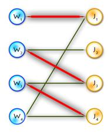
Path P is called alternating if its edges alternate between M and E\M. (For example, (W4, J4, W3, J3, W2, J2) and (W4, J1, W1) are alternating paths)
If the first and last vertices in alternating path are exposed, it is called augmenting (because we can increment the size of the matching by inverting edges along this path, therefore matching unmatched edges and vice versa). ((W4, J4, W3, J3, W2, J2) - augmenting alternating path)
A tree which has a root in some exposed vertex, and a property that every path starting in the root is alternating, is called an alternating tree. (Example on the picture above, with root in W4)
That's all for the theory, now let's look at the algorithm:
First let's have a look on the scheme of the Hungarian algorithm:
Step 0. Find some initial feasible vertex labeling and some initial matching.
Step 1. If M is perfect, then it's optimal, so problem is solved. Otherwise, some exposed exists; set . (x - is a root of the alternating tree we're going to build). Go to step 2.
Step 2. If go to step 3, else . Find
| (1) |
and replace existing labeling with the next one:
 |
(2) |
Now replace with
Step 3. Find some vertex . If y is exposed then an alternating path from x (root of the tree) to y exists, augment matching along this path and go to step 1. If y is matched in M with some vertex z add (z,y) to the alternating tree and set , go to step 2.
And now let's illustrate these steps by considering an example and writing some code.
As an example we'll use the previous one, but first let's transform it to the maximum-weighted matching problem, using the second method from the two described above. (See Picture 1)
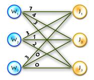
Picture 1
Here are the global variables that will be used in the code:
#define N 55 //max number of vertices in one part #define INF 100000000 //just infinity int cost[N][N]; //cost matrix int n, max_match; //n workers and n jobs int lx[N], ly[N]; //labels of X and Y parts int xy[N]; //xy[x] - vertex that is matched with x, int yx[N]; //yx[y] - vertex that is matched with y bool S[N], T[N]; //sets S and T in algorithm int slack[N]; //as in the algorithm description int slackx[N]; //slackx[y] such a vertex, that // l(slackx[y]) + l(y) - w(slackx[y],y) = slack[y] int prev[N]; //array for memorizing alternating paths
Step 0:
It's easy to see that next initial labeling will be feasible:
And as an initial matching we'll use an empty one. So we'll get equality subgraph as on Picture 2. The code for initializing is quite easy, but I'll paste it for completeness:
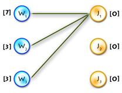
void init_labels() { memset(lx, 0, sizeof(lx)); memset(ly, 0, sizeof(ly)); for (int x = 0; x < n; x++) for (int y = 0; y < n; y++) lx[x] = max(lx[x], cost[x][y]); }
The next three steps will be implemented in one function, which will correspond to a single iteration of the algorithm. When the algorithm halts, we will have a perfect matching, that's why we'll have n iterations of the algorithm and therefore (n+1) calls of the function.
Step 1
According to this step we need to check whether the matching is already perfect, if the answer is positive we just stop algorithm, otherwise we need to clear S, T and alternating tree and then find some exposed vertex from the X part. Also, in this step we are initializing a slack array, I'll describe it on the next step.
void augment() //main function of the algorithm { if (max_match == n) return; //check wether matching is already perfect int x, y, root; //just counters and root vertex int q[N], wr = 0, rd = 0; //q - queue for bfs, wr,rd - write and read //pos in queue memset(S, false, sizeof(S)); //init set S memset(T, false, sizeof(T)); //init set T memset(prev, -1, sizeof(prev)); //init set prev - for the alternating tree for (x = 0; x < n; x++) //finding root of the tree if (xy[x] == -1) { q[wr++] = root = x; prev[x] = -2; S[x] = true; break; } for (y = 0; y < n; y++) //initializing slack array { slack[y] = lx[root] + ly[y] - cost[root][y]; slackx[y] = root; }
Step 2
On this step, the alternating tree is completely built for the
current labeling, but the augmenting path hasn't been found yet, so we
need to improve the labeling. It will add new edges to the equality
subgraph, giving an opportunity to expand the alternating tree. This is
the main idea of the method; we are improving the labeling until we find an augmenting path in the equality graph corresponding to the current labeling. Let's turn back to step 2. There we just change labels using formulas (1) and (2), but using them in an obvious manner will cause the algorithm to have O(n4) time. So, in order to avoid this we use a slack array initialized in O(n) time because we only augment the array created in step 1:
Then we just need O(n) to calculate a delta Δ (see (1)):
Updating slack:
1) On step 3, when vertex x moves from X\S to S, this takes O(n).
2) On step 2, when updating labeling, it's also takes O(n), because:
So we get O(n) instead of O(n2) as in the straightforward approach.
Here's code for the label updating function:
void update_labels() { int x, y, delta = INF; //init delta as infinity for (y = 0; y < n; y++) //calculate delta using slack if (!T[y]) delta = min(delta, slack[y]); for (x = 0; x < n; x++) //update X labels if (S[x]) lx[x] -= delta; for (y = 0; y < n; y++) //update Y labels if (T[y]) ly[y] += delta; for (y = 0; y < n; y++) //update slack array if (!T[y]) slack[y] -= delta; }
Step 3
In step 3, first we build an alternating tree starting from some exposed vertex, chosen at the beginning of each iteration. We will do this using breadth-first search algorithm. If on some step we meet an exposed vertex from the Y part, then finally we can augment our path, finishing up with a call to the main function of the algorithm. So the code will be the following:
1) Here's the function that adds new edges to the alternating tree:
void add_to_tree(int x, int prevx) //x - current vertex,prevx - vertex from X before x in the alternating path, //so we add edges (prevx, xy[x]), (xy[x], x) { S[x] = true; //add x to S prev[x] = prevx; //we need this when augmenting for (int y = 0; y < n; y++) //update slacks, because we add new vertex to S if (lx[x] + ly[y] - cost[x][y] < slack[y]) { slack[y] = lx[x] + ly[y] - cost[x][y]; slackx[y] = x; } }
3) And now, the end of the augment() function:
//second part of augment() function while (true) //main cycle { while (rd < wr) //building tree with bfs cycle { x = q[rd++]; //current vertex from X part for (y = 0; y < n; y++) //iterate through all edges in equality graph if (cost[x][y] == lx[x] + ly[y] && !T[y]) { if (yx[y] == -1) break; //an exposed vertex in Y found, so //augmenting path exists! T[y] = true; //else just add y to T, q[wr++] = yx[y]; //add vertex yx[y], which is matched //with y, to the queue add_to_tree(yx[y], x); //add edges (x,y) and (y,yx[y]) to the tree } if (y < n) break; //augmenting path found! } if (y < n) break; //augmenting path found! update_labels(); //augmenting path not found, so improve labeling wr = rd = 0; for (y = 0; y < n; y++) //in this cycle we add edges that were added to the equality graph as a //result of improving the labeling, we add edge (slackx[y], y) to the tree if //and only if !T[y] && slack[y] == 0, also with this edge we add another one //(y, yx[y]) or augment the matching, if y was exposed if (!T[y] && slack[y] == 0) { if (yx[y] == -1) //exposed vertex in Y found - augmenting path exists! { x = slackx[y]; break; } else { T[y] = true; //else just add y to T, if (!S[yx[y]]) { q[wr++] = yx[y]; //add vertex yx[y], which is matched with //y, to the queue add_to_tree(yx[y], slackx[y]); //and add edges (x,y) and (y, //yx[y]) to the tree } } } if (y < n) break; //augmenting path found! } if (y < n) //we found augmenting path! { max_match++; //increment matching //in this cycle we inverse edges along augmenting path for (int cx = x, cy = y, ty; cx != -2; cx = prev[cx], cy = ty) { ty = xy[cx]; yx[cy] = cx; xy[cx] = cy; } augment(); //recall function, go to step 1 of the algorithm } }//end of augment() function
The only thing in code that hasn't been explained yet is the procedure that goes after labels are updated. Say we've updated labels and now we need to complete our alternating tree; to do this and to keep algorithm in O(n3) time (it's only possible if we use each edge no more than one time per iteration) we need to know what edges should be added without iterating through all of them, and the answer for this question is to use BFS to add edges only from those vertices in Y, that are not in T and for which slack[y] = 0 (it's easy to prove that in such way we'll add all edges and keep algorithm to be O(n3)). See picture below for explanation:
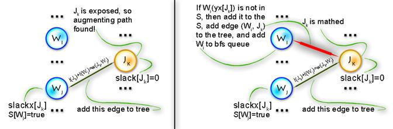
At last, here's the function that implements Hungarian algorithm:
int hungarian() { int ret = 0; //weight of the optimal matching max_match = 0; //number of vertices in current matching memset(xy, -1, sizeof(xy)); memset(yx, -1, sizeof(yx)); init_labels(); //step 0 augment(); //steps 1-3 for (int x = 0; x < n; x++) //forming answer there ret += cost[x][xy[x]]; return ret; }
To see all this in practice let's complete the example started on step 0.
| 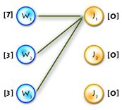 | Build alternating tree |
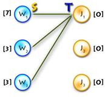 | Augmenting path found |
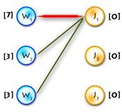 | Build alternating tree |
| → | → | → | |||
| 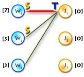 | Update labels (Δ=1) |
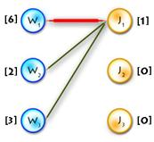 | Build alternating tree |
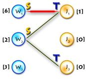 | Update labels (Δ=1) |
| → | → | → | |||
| 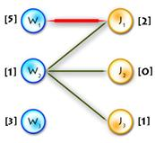 | Build alternating tree |
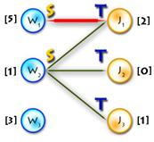 | Augmenting path found |
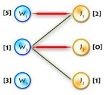 | Build alternating tree |
| → | → | → | |||
| 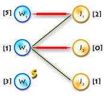 | Update labels (Δ=2) |
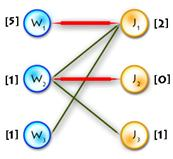 | Build alternating tree |
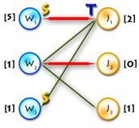 | Update labels (Δ=1) |
| → | → | → | |||
| 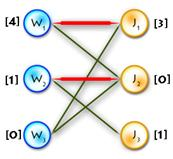 | Build alternating tree |
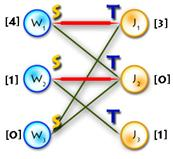 | Augmenting path found |
 |
Optimal matching found |
| → | → |
Finally, let's talk about the complexity of this algorithm. On each iteration we increment matching so we have n iterations. On each iterations each edge of the graph is used no more than one time when finding augmenting path, so we've got O(n2) operations. Concerning labeling we update slack array each time when we insert vertex from X into S, so this happens no more than n times per iteration, updating slack takes O(n) operations, so again we've got O(n2). Updating labels happens no more than n time per iterations (because we add at least one vertex from Y to T per iteration), it takes O(n) operations - again O(n2). So total complexity of this implementation is O(n3).
Some practice
For practice let's consider the medium problem from SRM 371 (div. 1). It's obvious we need to find the maximum-weighted matching in graph, where the X part is our players, the Y part is the opposing club players, and the weight of each edge is:
Though this problem has a much simpler solution, this one is obvious and fast coding can bring more points.
Try this one for more practice. I hope this article has increased the wealth of your knowledge in classical algorithms… Good luck and have fun!
References
- Mike Dawes "The Optimal Assignment Problem"
- Mordecaj J. Golin "Bipartite Matching and the Hungarian Method"
- Samir Khuller "Design and Analysis of Algorithms: Course Notes"
- Lawler E.L. "Combinatorial Optimization: Networks and Matroids"